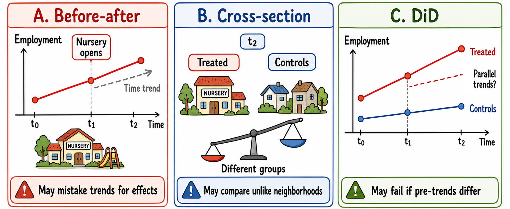
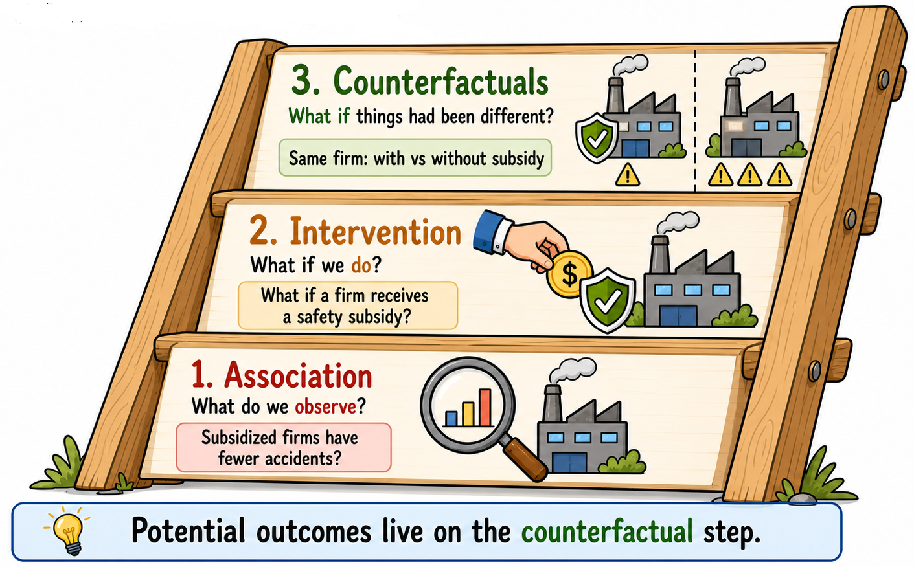

Does the opening of a nursery school in a neighborhood increase local employment? Do subsidies aimed at improving workplace safety actually reduce occupational injuries? Do local jurisdiction amalgamations affect voters’ political engagement? How many people died because of the COVID-19 pandemic?
These are all causal questions. They ask whether a specific policy, intervention, or shock produced a change in an outcome of interest. In the language of impact evaluation, we usually refer to this policy, intervention, or shock more generally as the treatment. The treatment may be the opening of a nursery school, the provision of workplace-safety subsidies, a municipal amalgamation, or a large unexpected shock such as the COVID-19 pandemic. The outcome may be parents’ employment, occupational injuries, voter turnout, or pandemic-related deaths.
But how can we answer such questions in a credible way?
1.1 An example: the opening of a nursery school
Consider the first example. Suppose that, at time \(t_0\), a neighborhood has no nursery school. At time \(t_1\), a new nursery school opens. By time \(t_2\), we observe the employment status of parents of young children in that neighborhood.
Nursery schools may serve several purposes, from supporting child development to helping families manage care responsibilities. In this example, however, we focus on one specific mechanism: access to childcare may free up parents’ time and make it easier for them to participate in the labor market.
However, observing what happens after the nursery school opens is not enough to establish whether it caused a change in parents’ employment. To answer this question, we need to think in counterfactual terms.
NoteThe counterfactual question
What would have happened to parents’ employment in the treated neighborhood if the nursery school had not opened?
This is the central difficulty of impact evaluation. We observe the employment status of parents in the treated neighborhood after the nursery school opens, but we cannot observe what their employment status would have been, at the same time, if the nursery school had not opened. The counterfactual is therefore missing. The goal of impact evaluation methods is to find a credible way to fill in this missing information.
1.2 Three intuitive comparisons
There are several intuitive ways one might try to estimate the effect of the nursery school.
Option A: We could use a before–after comparison. We could compare parents’ employment in the neighborhood before the nursery school opened, at \(t_0\), with parents’ employment after the opening, at \(t_2\).
Option B: We could use a cross-sectional comparison. We could compare parents’ employment in the treated neighborhood after the nursery school opened, at \(t_2\), with parents’ employment in other neighborhoods where no nursery school opened during the same period.
Option C: We could use a difference-in-differences comparison. We could compare the change in parents’ employment in the treated neighborhood between \(t_0\) and \(t_2\) with the change in parents’ employment over the same period in neighborhoods that did not receive a new nursery school.
Each of these approaches is intuitive. Yet each can also be misleading.
1.3 Why simple comparisons may fail
NoteIdentification issues with simple comparisons

This vignette illustrates why the simple comparisons discussed above may fail to identify the causal effect of interest. Before-after comparisons may confound treatment effects with underlying time trends; cross-sectional comparisons may compare inherently different groups; and DiD may be misleading if parents’ employment was already evolving differently in treated and untreated areas before the treatment.
Option A: A before–after comparison may confuse the effect of the nursery school with other changes occurring over time. Parents’ employment may have increased even without the new facility. For example, the local labor market may already have been improving before the nursery school opened. In that case, attributing the entire increase in parents’ employment to the nursery school would overstate its effect. Similarly, if a negative economic shock occurred between \(t_1\) and \(t_2\), we might wrongly attribute the consequences of that shock to the nursery school.
Option B: A cross-sectional comparison may also lead to wrong conclusions. Neighborhoods with and without a new nursery school may differ in many ways even before the policy is introduced. They may have different income levels, demographic structures, education levels, labor-market opportunities, or demand for childcare. As these differences are usually related to employment, then comparing the two groups of parents after the nursery school opens would not correctly identify the employment effect of the nursery school itself.
Option C: A difference-in-differences comparison is the most sophisticated among these simple alternatives, but it still relies on an assumption that may not hold in this application. The key requirement is the parallel-trends assumption: if the nursery school had not opened, parents’ employment in the treated neighborhood would have evolved similarly to parents’ employment in the comparison neighborhoods. However, if parents’ employment was already evolving differently in the treated neighborhood before the opening, this assumption may not be credible. In that case, the estimated effect may still mix the impact of the nursery school with other pre-existing differences in parents’ employment trends.
ImportantBack to basics
The causal question is not whether the outcome changed over time, but whether it changed because of the treatment, and by how much.
To answer it, we need a credible counterfactual: a convincing approximation of what the outcome of treated units would have been in the post-treatment period had they not received the treatment.
1.4 Why observational data are challenging
Constructing a credible counterfactual is not easy, especially when working with observational data, as in the examples above. In observational settings, policies are not usually assigned at random. Nursery schools may open in neighborhoods with specific characteristics. Workplace-safety subsidies may be received by firms that are more proactive, more exposed to risk, or better informed about public programs. Municipal amalgamations may involve municipalities with particular administrative or political characteristics.
For this reason, a simple comparison between treated and untreated units may be misleading: it may reflect pre-existing differences between the two groups rather than the causal effect of the treatment
1.5 Why randomized controlled trials help
Estimating the causal effect would be easier in an RCT. Suppose, for example, that a large number of similar neighborhoods applied to receive a new nursery school, but budget constraints allowed the government to build only some of them.
If the neighborhoods receiving the new facility were chosen at random, then, on average, the treated and untreated neighborhoods would be comparable before the policy. This is because random assignment breaks the link between treatment status and the pre-existing characteristics of neighborhoods: richer and poorer areas, neighborhoods with higher or lower employment, and places with stronger or weaker demand for childcare would all have the same probability of receiving the new nursery school.
With a sufficiently large number of neighborhoods, the law of large numbers helps ensure that these characteristics are balanced between the treated and untreated groups. In that case, the neighborhoods without a new facility would provide a credible approximation of what would have happened to the treated neighborhoods in the absence of the policy.
NoteWhy randomization is powerful
Randomization is powerful because it makes the comparison group credible by design. Differences observed after the intervention can then be more plausibly attributed to the policy itself, rather than to pre-existing differences between treated and untreated units.
This is why RCTs are often considered the benchmark for causal evaluation.
1.6 Back to impact evaluation methods
In many policy contexts, however, randomization is not feasible. It may be too costly, politically unacceptable, ethically problematic, or simply impossible because the policy has already been implemented.
Much of impact evaluation therefore deals with a practical question:
TipThe practical question
How can we construct a credible counterfactual when random assignment is not available?
The methods discussed in this book can be seen as different answers to this question. Each method tries, in its own way, to approximate the missing counterfactual under certain assumptions. The key issue is not to choose the most sophisticated method, but to understand which available method is supported by the most credible assumptions in the empirical setting under analysis.
ImportantRCT thinking in observational studies
Donald Rubin puts the point very sharply:
“Valid frequentist causal inferences from an observational study can only be obtained if you embed the observational study within a hypothetical randomized experiment. […] Otherwise you are just looking at computer output and implied associations, and making up, generally silly, although sometimes interesting, stories.”
Source: This quote is from Rubin’s interview in Observational Studies(Rubin 2022).
This statement captures a central lesson of impact evaluation: even when we cannot run an RCT, we should still think as if we were trying to approximate one. This means asking what the corresponding randomized experiment would look like. If randomization had been possible, who would have been eligible for treatment? Which units would have been randomly assigned to treatment and control? What would the control condition have been?
In observational studies, we must then ask how the actual setting differs from this ideal experiment. Why did some units receive the treatment while others did not? Which pre-treatment characteristics may have influenced treatment assignment? Which untreated units are most comparable to the treated units? And under which assumptions can this observational comparison approximate the comparison that randomization would have created?
This way of thinking is useful because it disciplines the design of observational studies. It forces the researcher to move beyond the mechanical application of an evaluation methods and to make explicit the comparison that gives the causal estimate its meaning. In this sense, RCT thinking is not only relevant for randomized experiments. It is also a benchmark for observational studies: it helps clarify the target causal question, the assignment mechanism, the role of untreated units, and the assumptions needed to interpret an estimate causally.
Pearl and Mackenzie (2018) describe causal reasoning as a ladder of causality with three levels.

The ladder of causality distinguishes between observing associations, evaluating interventions, and reasoning about counterfactuals. The potential outcomes framework operates at the counterfactual level: it asks what would have happened to the same unit under a different treatment status.
The first level is association. At this level, we ask whether two variables move together. For example: are firms that receive public subsidies less likely to have workplace accidents? This is an associational question. It can be answered by comparing observed accident rates, or by estimating a regression that relates accident rates to subsidy receipt. However, it does not tell us whether the subsidy caused the difference. Many empirical analyses stop at this level. They document that a treatment variable is statistically associated with an outcome and then interpret the estimated coefficient as if it were a causal effect. This is tempting, but it is not enough. Unless we explain why the comparison between treated and untreated units approximates a credible counterfactual, the coefficient remains an association, not a causal estimate. One of the main aims of this book is to convince the reader that this is not a reliable way to estimate causal effects. To do so, we need to move up the ladder…
The second level is intervention. At this level, we ask what would happen if we actively changed something. For example: what would happen to workplace accidents if a firm received a public subsidy for safety investments? This is the level of causal effects and policy evaluation.
The third level is counterfactuals. At this level, we ask what would have happened under an alternative state of the world. For example: for a firm that received the subsidy, how many workplace accidents would have occurred if that same firm had not received it? This is the level of potential outcomes, because it compares the observed outcome with the missing counterfactual outcome.
In this sense, the potential outcomes framework works at the counterfactual level of the ladder. It defines causal effects by comparing what happened with what would have happened under a different treatment status.
The Backbone of Impact Evaluation MethodsThe Backbone of Impact Evaluation Methods2The Potential Outcomes FrameworkAbout the bookAbout the bookFoundations1Why Impact Evaluation?2The Potential Outcomes Framework3Causal Parameters of InterestControl-based Designs4Randomized Controlled Trials5Selection on observable methods6Difference-in-Differences7Event Studies8Instrumental variables9Regression Discontinuity Design10Synthetic Control MethodOther topics11Forecast-Based Counterfactual Methods12Heterogeneous Treatment Effects13Spillover Effects14Continuous Treatments15MiscellaneaReferencesFoundations1Why Impact Evaluation?
1Why Impact Evaluation? – The Backbone of Impact Evaluation Methods1Why Impact Evaluation? – The Backbone of Impact Evaluation Methods1Why Impact Evaluation? – The Backbone of Impact Evaluation MethodsThe Backbone of Impact Evaluation Methods
# Why Impact Evaluation?Does the opening of a nursery school in a neighborhood increase local employment? Do subsidies aimed at improving workplace safety actually reduce occupational injuries? Do local jurisdiction amalgamations affect voters' political engagement? How many people died because of the COVID-19 pandemic?These are all **causal questions**. They ask whether a specific policy, intervention, or shock produced a change in an outcome of interest. In the language of impact evaluation, we usually refer to this policy, intervention, or shock more generally as the **treatment**. The treatment may be the opening of a nursery school, the provision of workplace-safety subsidies, a municipal amalgamation, or a large unexpected shock such as the COVID-19 pandemic. The outcome may be parents' employment, occupational injuries, voter turnout, or pandemic-related deaths.But how can we answer such questions in a credible way?## An example: the opening of a nursery schoolConsider the first example. Suppose that, at time $t_0$, a neighborhood has no nursery school. At time $t_1$, a new nursery school opens. By time $t_2$, we observe the employment status of parents of young children in that neighborhood.Nursery schools may serve several purposes, from supporting child development to helping families manage care responsibilities. In this example, however, we focus on one specific mechanism: access to childcare may free up parents’ time and make it easier for them to participate in the labor market.However, observing what happens after the nursery school opens is not enough to establish whether it caused a change in parents' employment. To answer this question, we need to think in **counterfactual terms**.::: {.callout-note}## The counterfactual questionWhat would have happened to parents’ employment in the treated neighborhood if the nursery school had not opened?:::This is the central difficulty of impact evaluation. We observe the employment status of parents in the treated neighborhood after the nursery school opens, but we cannot observe what their employment status would have been, at the same time, if the nursery school had not opened. The counterfactual is therefore missing. The goal of impact evaluation methods is to find a credible way to **fill in this missing information**.## Three intuitive comparisonsThere are several intuitive ways one might try to estimate the effect of the nursery school.**Option A**: We could use **a before–after comparison.** We could compare parents’ employment in the neighborhood before the nursery school opened, at $t_0$, with parents’ employment after the opening, at $t_2$.**Option B**: We could use **a cross-sectional comparison**. We could compare parents’ employment in the treated neighborhood after the nursery school opened, at $t_2$, with parents’ employment in other neighborhoods where no nursery school opened during the same period.**Option C**: We could use **a difference-in-differences comparison.** We could compare the change in parents’ employment in the treated neighborhood between $t_0$ and $t_2$ with the change in parents’ employment over the same period in neighborhoods that did not receive a new nursery school.Each of these approaches is intuitive. Yet each can also be misleading.## Why simple comparisons may fail::: {.callout-note}## Identification issues with simple comparisons:::**Option A**: A before–after comparison may confuse the effect of the nursery school with other changes occurring over time. Parents’ employment may have increased even without the new facility. For example, the local labor market may already have been improving before the nursery school opened. In that case, attributing the entire increase in parents’ employment to the nursery school would overstate its effect. Similarly, if a negative economic shock occurred between $t_1$ and $t_2$, we might wrongly attribute the consequences of that shock to the nursery school.**Option B**: A cross-sectional comparison may also lead to wrong conclusions. Neighborhoods with and without a new nursery school may differ in many ways even before the policy is introduced. They may have different income levels, demographic structures, education levels, labor-market opportunities, or demand for childcare. As these differences are usually related to employment, then comparing the two groups of parents after the nursery school opens would not correctly identify the employment effect of the nursery school itself.**Option C**: A difference-in-differences comparison is the most sophisticated among these simple alternatives, but it still relies on an assumption that may not hold in this application. The key requirement is the **parallel-trends assumption**: if the nursery school had not opened, parents’ employment in the treated neighborhood would have evolved similarly to parents’ employment in the comparison neighborhoods. However, if parents’ employment was already evolving differently in the treated neighborhood before the opening, this assumption may not be credible. In that case, the estimated effect may still mix the impact of the nursery school with other pre-existing differences in parents’ employment trends.::: {.callout-important}## Back to basicsThe causal question is not whether the outcome changed over time, but **whether it changed because of the treatment**, and by how much.To answer it, we need a credible counterfactual: a convincing approximation of what the outcome of treated units would have been in the post-treatment period had they not received the treatment.:::## Why observational data are challengingConstructing a credible counterfactual is not easy, especially when working with **observational data**, as in the examples above. In observational settings, policies are not usually assigned at random. Nursery schools may open in neighborhoods with specific characteristics. Workplace-safety subsidies may be received by firms that are more proactive, more exposed to risk, or better informed about public programs. Municipal amalgamations may involve municipalities with particular administrative or political characteristics.For this reason, a simple comparison between treated and untreated units may be misleading: it may reflect pre-existing differences between the two groups rather than the causal effect of the treatment## Why randomized controlled trials helpEstimating the causal effect would be easier in an **RCT**. Suppose, for example, that a large number of similar neighborhoods applied to receive a new nursery school, but budget constraints allowed the government to build only some of them.If the neighborhoods receiving the new facility were chosen at random, then, on average, the treated and untreated neighborhoods would be comparable before the policy. This is because random assignment breaks the link between treatment status and the pre-existing characteristics of neighborhoods: richer and poorer areas, neighborhoods with higher or lower employment, and places with stronger or weaker demand for childcare would all have the same probability of receiving the new nursery school.With a sufficiently large number of neighborhoods, the **law of large numbers** helps ensure that these characteristics are balanced between the treated and untreated groups. In that case, the neighborhoods without a new facility would provide a credible approximation of what would have happened to the treated neighborhoods in the absence of the policy.::: {.callout-note}## Why randomization is powerfulRandomization is powerful because it makes the comparison group credible **by design**. Differences observed after the intervention can then be more plausibly attributed to the policy itself, rather than to pre-existing differences between treated and untreated units.This is why RCTs are often considered the benchmark for causal evaluation.:::## Back to impact evaluation methodsIn many policy contexts, however, randomization is not feasible. It may be too costly, politically unacceptable, ethically problematic, or simply impossible because the policy has already been implemented.Much of impact evaluation therefore deals with a practical question:::: {.callout-tip}## The practical questionHow can we construct a credible counterfactual when random assignment is not available?:::The methods discussed in this book can be seen as different answers to this question. Each method tries, in its own way, to approximate the missing counterfactual under certain assumptions. The key issue is not to choose the most sophisticated method, but to understand **which available method is supported by the most credible assumptions in the empirical setting under analysis**.::: {.callout-important}## RCT thinking in observational studiesDonald Rubin puts the point very sharply:> “Valid frequentist causal inferences from an observational study can only be obtained if you embed the observational study within a hypothetical randomized experiment. [...] Otherwise you are just looking at computer output and implied associations, and making up, generally silly, although sometimes interesting, stories.”Source: This quote is from Rubin's interview in *Observational Studies* [@rubin2022interview].This statement captures a central lesson of impact evaluation: **even when we cannot run an RCT, we should still think as if we were trying to approximate one**. This means asking what the corresponding randomized experiment would look like. If randomization had been possible, who would have been eligible for treatment? Which units would have been randomly assigned to treatment and control? What would the control condition have been?In observational studies, we must then ask how the actual setting differs from this ideal experiment. Why did some units receive the treatment while others did not? Which pre-treatment characteristics may have influenced treatment assignment? Which untreated units are most comparable to the treated units? And under which assumptions can this observational comparison approximate the comparison that randomization would have created?This way of thinking is useful because it disciplines the design of observational studies. It forces the researcher to move beyond the mechanical application of an evaluation methods and to make explicit the comparison that gives the causal estimate its meaning. In this sense, **RCT thinking** is not only relevant for randomized experiments. It is also a benchmark for observational studies: it helps clarify the target causal question, the assignment mechanism, the role of untreated units, and the assumptions needed to interpret an estimate causally.:::<!--## The counterfactual questionFor each treated unit, we would like to know two outcomes:- the outcome observed under treatment;- the outcome that would have been observed without treatment.The first is observed. The second is not. This missing outcome is the counterfactual.Different impact evaluation methods differ in how they approximate this missing counterfactual outcome.-->::: {.callout-note appearance="simple"}\smallPearl and Mackenzie [-@pearl2018] describe causal reasoning as a **ladder of causality** with three levels.{width="80%"}1. The first level is **association**. At this level, we ask whether two variables move together. For example: are firms that receive public subsidies less likely to have workplace accidents? This is an associational question. It can be answered by comparing observed accident rates, or by estimating a regression that relates accident rates to subsidy receipt. However, it does not tell us whether the subsidy caused the difference. Many empirical analyses stop at this level. They document that a treatment variable is statistically associated with an outcome and then interpret the estimated coefficient as if it were a causal effect. This is tempting, but it is not enough. Unless we explain why the comparison between treated and untreated units approximates a credible counterfactual, the coefficient remains an association, not a causal estimate. One of the main aims of this book is to convince the reader that this is not a reliable way to estimate causal effects. To do so, we need to move up the ladder...2. The second level is **intervention**. At this level, we ask what would happen if we actively changed something. For example: what would happen to workplace accidents if a firm received a public subsidy for safety investments? This is the level of causal effects and policy evaluation.3. The third level is **counterfactuals**. At this level, we ask what would have happened under an alternative state of the world. For example: for a firm that received the subsidy, how many workplace accidents would have occurred if that same firm had not received it? This is the level of potential outcomes, because it compares the observed outcome with the missing counterfactual outcome.In this sense, the potential outcomes framework works at the counterfactual level of the ladder. It defines causal effects by comparing what happened with what would have happened under a different treatment status.:::
Pearl, Judea, and Dana Mackenzie. 2018. The Book of Why: The New Science of Cause and Effect. Basic Books.